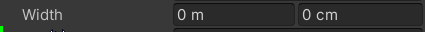

Released 2021-07-29
Upgrade Guide
See the Animancer v6.0 Upgrade Guide if you are upgrading from a version older than that, then follow the Upgrade Process explained below to upgrade to this version.
Major Changes
- Support for Unity 2018.4 has been dropped. The minimum supported version is now 2019.4 (though it might still work on earlier 2019 versions).
- All Transition Scripts have been moved and renamed (see the Renaming table).
- Transition Assets now use
[SerializeReference]fields. Unfortunately, this means that all Transition Assets will lose their data when upgrading from an earlier version of Animancer.
Click here for more information about these changes and why they were necessary:
Why drop support for Unity 2018?
- The
[SerializeReference]system was only introduced in Unity 2019. Continuing to support 2018 would be possible using Platform Dependent Compilation, but would significantly complicate certain sections of code as well as the testing and releasse process of Animancer as a whole (much moreso than simply adding another supported version would). - Animancer v7.0 is already being specifically tested in 3 other versions of Unity:
- 2019.4 (LTS)
- 2020.3 (LTS)
- 2021.1 (Latest Stable)
- Unity 2018.4 is currently still listed in Unity Hub, but it has already exceeded its 2 year LTS lifespan so new projects should not be started with it. Existing projects will either need to stay on an older version of Animancer or update to a newer version of Unity first.
What benefits have the change brought?
- The Serialized References section explains the increased flexibility that the change allows.
Why were the Transition Scripts moved?
[SerializeReference]fields store the full type and assembly name of the value they are assigned.- Previously, those classes were compiled into
Animancer.Lite.dllfor Animancer Lite while Animancer Pro included them as regular scripts. - That meant upgrading from Lite to Pro would change the assembly name, causing all
[SerializeReference]fields to both lose their data and log errors about it in the console, which is unacceptable. The upgrade process from Lite to Pro must be as seamless as possible. - So all Transition Scripts have been moved to the Utilities/Transitions folder and their source code is now included in Animancer Lite.
Why were the Transition Scripts renamed?
- Since they are now in a different assembly from the State classes, the Transition classes can no longer be nested inside them.
- With
ClipState.Transitionno longer being insideClipStateit obviously can't just be calledTransitionso the logical choice isClipTransition. - Unfortunately,
ClipTransitionwas previously the Transition Asset type, so it also had to be renamed toClipTransitionAsset. - All transition types follow the same naming convention, which is listed in the Renaming table.
Upgrade Process
You might want to avoid updating Animancer in the middle of the project. Steps #5 and #6 in particular could take a long time.
- See the Animancer v6.0 Upgrade Guide if you are upgrading from a version older than that.
- Backup your project.
- Update your project to Unity 2019.4 or newer.
- Delete your previous version of Animancer (located at Assets/Plugins/Animancer by default). This will cause compile errors in any of your scripts that reference Animancer.
- Go through your scripts and change the names of Animancer classes according to the Renaming table.
6. If you have any Transition Assets, you can manually edit them with a text editor to prevent them from losing their data.
The issue is that the [SerializeField] stores its data in a slightly different format to [SerializeReference] and Unity doesn't support conversion between them. However, the format is relatively simple so you can open any Transition Asset files with any text editor and make the following change. This can be much easier with a file comparison tool in a version control system.
The old format looks like this:
_Transition:
_FadeDuration: 0.25
// ... Other fields in the transition.
And the new format looks like this:
_Transition:// The actual field
id: 0// The index of the reference
references:// The list of all references
version: 1
00000000:// The id: 0 refers to this reference
type: {class: ClipTransition, ns: Animancer, asm: Animancer}// The assigned type
data:// The actual data all looks the same
_FadeDuration: 0.25
// ... Other fields in the transition.
So there are 3 changes to make:
- Replace the
_Transition:line with:
_Transition:
id: 0
references:
version: 1
00000000:
type: {class: ClipTransition, ns: Animancer, asm: Animancer}
data:
- Replace that
ClipTransitionwith the appropriate type for the asset. - Add 4 spaces to the start of every line after that (starting with the
_FadeDuration:) because the indentation is important.
- Download and import the new version of Animancer.
- If you still have any compile errors, use
Ctrl + Fto search this page for any relevant changes.
Renaming
Make sure you rename Transition Assets first (ClipTransition to ClipTransitionAsset) before doing any regular Transitions (ClipState.Transition to ClipTransition) to avoid confusion.
| Old Name | New Name |
|---|---|
ClipTransitionControllerTransitionFloat1ControllerTransitionFloat2ControllerTransitionFloat3ControllerTransitionLinearMixerTransitionManualMixerTransitionMixerTransition2DPlayableAssetTransition |
ClipTransitionAssetControllerTransitionAssetFloat1ControllerTransitionAssetFloat2ControllerTransitionAssetFloat3ControllerTransitionAssetLinearMixerTransitionAssetManualMixerTransitionAssetMixerTransition2DAssetPlayableAssetTransitionAsset |
ClipState.TransitionControllerState.TransitionFloat1ControllerState.TransitionFloat2ControllerState.TransitionFloat3ControllerState.TransitionLinearMixerState.TransitionManualMixerState.TransitionMixerState.Transition2DPlayableAssetState.Transition |
ClipTransitionControllerTransitionFloat1ControllerTransitionFloat2ControllerTransitionFloat3ControllerTransitionLinearMixerTransitionManualMixerTransitionMixerTransition2DPlayableAssetTransition |
Everything in the Examples with Creature in its name has been renamed to Character.
Various other things have been renamed but they are generally minor and/or internal so much less likely to be referenced by user code. If you get such errors after importing the new version of Animancer, simply use Ctrl + F to search this page.
Major Features
Platformer
Removed the old Platformer example and created a much more extensive Platformer Game Kit which has much better character physics, wall jumping, moving platforms, a hit box system, various enemies with different behaviours, and more. It's free and works with Animancer Lite, though it does use some Pro-Only features (explained here).
| Old Platformer Example | New Platformer Game Kit |
|---|---|
 |
Time Fields
Improved the way Transition Time Fields are drawn in the Inspector:
- Added a Frame field so they now show their value as Normalized, Seconds, and Frames.
- Standardised the implementation in a base Units Attribute with
[AnimationTime]and[AnimationSpeed]subclasses. - Used the same implementation for the Normalized/Pixel fields in the Sprite Editor.
- Added options in
AnimancerSettingsto choose which fields are shown. - These fields now show Approximations if there is not enough room to show the full value. For example,
1.111111could instead show1.111~. - You can now Middle Click any of these fields to set them to their Default Value (or a secondary default if they were already at the primary value).
- Improved the tooltips on all Transition Fields.
Units Attributes
The Units Attributes can be used on float fields to give them a suffix indicating what kind of units they represent.
They allow the value to be displayed in multiple units at the same time:

You can Middle Click to reset the field to its [DefaultValue]:
And you can specify a Validate.Value rule to limit the allowed values:

Weight Fields
Improved the way abbreviated weight labels are displayed in the AnimancerComponent Inspector. In particular, small values near 0 which aren't exactly 0 will show as ~0 instead of 0.0. The same applies to values near 1. #131
UnShared Transition Assets
Added UnShared classes to solve issues with the State and Events on shared Transition Asset. #112
Serialized References
Added Polymorphic Drawer system to allow the type of a [SerializeReference] field to be selected. These are used by Transitions, but you can also use them in your own code to avoid needing to write custom drawers.
Changed Transition Assets to use a [SerializeReference] for their Transition field so that child types can be used without requiring their own Transition Asset and UnShared classes.
Also added ITransition interfaces for each state type. For example:
- A
[SerializeReference] ITransitionfield would allow any kind of transition to be assigned. - A
[SerializeReference] ClipState.ITransitionfield would only allow transitions that createClipStates (i.e. a regularClipTransition, aClipTransitionSequence, or aMotionTransitionfrom the Root Motion example).
Improved Transition Event Inspector
Improved the way Transitions display events in the Inspector:
- Selecting and deselecting them now animates their visibility rather than suddenly changing the fields that are shown.
- Holding Ctrl while dragging an event now snaps its time to the nearest multiple of the animation's frame rate.
Preview Time Buttons
When the Transition Preview Window is open, all time fields show a button on the right:
- Left Click it to make the preview show that time.
- Right Click it to set the field to use the current preview time.
This applies to event times too, which helps massively with getting the values aligned precisely where you want them.
Custom Preview GUI
Added ITransitionGUI which can be implemented by transitions to modify their preview scene (to do things like drawing hit boxes in the preview).
The video below shows the hit box editing system in the new Platformer Game Kit:
Animation Clip Inspector
Added a custom Animation Clip Inspector to improve the way AnimationClips are displayed in the Inspector:
- Shows a button to easily open the Animation window.
- Shows Animation Events.
| Unity Default | Animancer |
|---|---|
 |
There are also a few features specific to Sprite animations:
- Shows the
Spriteand details of each frame in the animation. - Automatically initializes the preview so you don't need to manually drag and drop an object with an
AnimatorandSpriteRendererinto the preview area.
| Unity Default | Animancer |
|---|---|
Runtime Events Display
- Added
Eventsdisplay to the Live Inspector for states that have Animancer Events. - Added
Runtime Eventsdisplay to Transitions that have initialized theirAnimancerEvent.Sequence.
Examples
- Added Transitions example.
- Added Event Utilities example.
- Added Units Attributes to the example scripts where appropriate.
- Removed the
Sequence Coroutineexample since it was really long, spent lots of time explaining coroutines (there are plenty of other tutorials for that), and wasted time explaining several different approaches which are all worse than simply using aClipTransitionSequence. - Removed the
Walk and Runexample since Linear Blending does the same job better. - Removed the
PixelPerfectPositioningscript since Unity's 2D Pixel Perfect package is better (now that they have inbuilt Time Synchronization). - Renamed the More Brains example to Brain Transplants.
- Renamed everything with
Creaturein its name toCharacter. - Changed the Linear Blending example to use the new UnShared Transition Asset system.
- Changed the Brains example
LocomotionStateto use a Linear Mixer instead of manually synchronizing the Walk and Run animations. - Changed all
[DefaultExecutionOrder]attributes to use constants so they can directly reference each other's values if they are related. - Improved the Layers script to allow the running state to be toggled without interrupting the action.
- Fixed the Humanoid-GolfSwingReady animation to have 0 length (somehow it was
0.000000059604645seconds long). - Fixed the
Doorexample script to be usable in prefabs. - Fixed the Hybrid Basics example to disable
OptionalWarning.NativeControllerHumanoid.
Minor Features
- Added
DontAllowFadefor easily detecting accidental fades onSpritebased characters (often due to the defaultFade Durationon transitions). - Added
AnimancerUtilities.EditModeSampleAnimationto replace thepauseImmediatelyparameter fromEditModePlay.- Changed the
SoloAnimationcomponent to automatically apply the first frame of its animation in Edit Mode. - Added an
Apply In Edit Modefield to prevent it from doing that if you don't want it to.
- Changed the
- Added wrapper methods in
ControllerStatefor all the methods you would normally access on itsPlayable(so you can callstate.Play(...)instead ofstate.Playable.Play(...)). - The
CustomFadesystem can now be applied to layers rather than only states. - Added
ExitEventsystem. #117 - Added
AnimancerPlayable.UpdatableCountandGetUpdatable. - Added
AnimancerUtilities.Assertwhich throws an exception (unlikeDebug.Assert) and used it where appropriate. - Added
AnimancerState.MoveTimewhich sets theTimeand applies any Root Motion and Animation Events (but not Animancer Events) between the old and new time. #120 - Added support for Animancer Events on states in Mixers.
- Changed
AnimancerPlayable.DefaultFadeDurationto a property instead of a constant so it can be modified externally.- Animancer Lite only allows it to be set to
0or0.25. - Restructured various places it was used that require constants (attributes and default parameters).
- Added
[DefaultFadeValue]for theFadeDurationfield in Transitions.
- Animancer Lite only allows it to be set to
- Added
TimelineGUI.Currentproperty to access the current drawer context. - Added
IPlayableWrapper.NormalizeChildWeightsextension method. - Added
ClipTransitionSequence.EndEventto easily access the end event of the last transition in the sequence. - Added support for inheritance in
[SerializeReference]fields to theSerializationsystem.- Made
Serialization.PropertyAccessor.FieldandFieldTypeprivate and addedGetFieldandGetFieldElementTypemethods so that it can support[SerializeReference]fields where inheritance might prevent theFieldInfofrom being accessible just based on the field type. - Fixed
Serialization.PropertyAccessor.ResetValueto run the constructor of the field's current type so that it can reset[SerializeReference]fields to the defaults of the current type instead of null.
- Made
- Added
AnimancerEditorUtilities.GetNameCSfor displaying user-friendly type names. - Improved Transition Preview Window:
- While playing, the preview time indicator in the
TimelineGUIis now properly updated. - Fixed time scrubbing for negative speeds.
- Modifying any Time Field in a Transition's Inspector now sets the preview to that time (if the modified Transition is the one being previewed).
- Modifying any field in a Transition now updates the preview to show the change.
- Added
TemporarySettings.PreviewModelsso it can remember scene objects used for previews as long as they still exist. - It now shows a warning when the selected model has no
Animatorcomponent. - Added
PreviewContext Menu Function toAnimationClipassets so they can be previewed directly without needing a Transition.
- While playing, the preview time indicator in the
- Improved
[EventNames]attribute to allow it to be placed on the transition class itself. For example, everyProjectileAttackTransitionin the Platformer Game Kit should have a"Fire"event, so putting the attribute on that class avoids the need to put it on everyProjectileAttackTransitionfield.
Changes
- Changed the default
NormalizedStartTimefor Transitions to be0(start at beginning) instead ofNaN(continue from current time). - Reworked
IUpdatable:- Merged
EarlyUpdateandLateUpdateintoUpdate. - Removed
OnDestroysince it was only used byAnimancerState.EventDispatcher. Destroying the graph while events are in use will simply allow the dispatcher to be garbage collected instead of going out of its way to ensure that they always get object-pooled. Destroying the graph will generally only happen when the object is destroyed, so there is going to already be a bunch of garbage collection anyway. - The time it gets called is chosen by using either
AnimancerPlayable.RequirePreUpdateorRequirePostUpdate. AnimancerNodenow implementsIUpdatableso it can use the same loop as custom objects instead of needing separate loops.AnimancerState.EventDispatchernow stores the previous time at the end of its (post)Updateinstead of doing it inPreUpdate(which was why both methods used to be separate).
- Merged
- Renamed
TimeRulertoTimelineGUI. - Renamed
AnimancerEvent.Sequence.Serializable.SequencetoEvents. - Moved
AnimancerState.EffectiveWeighttoAnimancerNode. - Moved
IKeyedListItemintoKeyand renamed it toIListItem. - Moved
AnimationBindings.IsChangingPlayModeintoAnimancerEditorUtilitiessince it's also used by the Transition Preview Window. - Moved unnecessary
ITransitionDetailedmembers out to separate interfaces:IHasEvents:Events,SerializedEvents.IMotion:AverageAngularSpeed,AverageVelocity. Removed these fromAnimancerStateand only implemented them inClipStateandMixerState.- Removed
BaseStateandMainObject.
- Changed the
DirectionalAnimationSetmethods likeSetLeft,SetRight, etc. to use regular property setters but include an assertion thatAllowSetClipsmust have been called beforehand to avoid accidentally modifying the set (since they are assets and will retain any such changes after leaving Play Mode). - Removed various methods in
AnimancerEditorUtilitieswhich are no longer being used:ShouldAllowReference,Invoke,RegisterNonCriticalIssue,RegisterNonCriticalMissingType,RegisterNonCriticalMissingMember,AppendNonCriticalIssues. - Removed
AnimancerEvent.Sequence.RemoveAllsince it is unlikely to be useful (it was the same asClearwithout removing the end event). - Removed
GUIElementWidthsince it wasn't used much and didn't offer much benefit. - Removed
AnimancerEditorUtilities.GetCachedResultand replaced it with manual caching. - Made
ConversionCacheEditor-Only. - Removed usage of the
new()generic constraint where possible because it is actually quite inefficient.- Removed
AnimancerUtilities.NewIfNull. Unfortunately, Unity doesn't yet support the??=operator.
- Removed
- Removed
AnimancerPlayable.StateDictionary.Create<T>andAnimancerLayer.CreateState<T>since they didn't do much more thannew T()anyway. - Removed
maxChildDepthparameters fromAnimancerNode.GetDescriptionandAppendDescriptionmethods since they were basically pointless. - Replaced
AnimancerGUI.TempContentwithObjectPool.Disposable.AcquireContent. - Optimized the usage of
AnimancerPlayable.LayerList._Layersso it doesn't need to be null-checked. This also means that to set the startingCapacityyou should set theAnimancerPlayable.LayerList.DefaultCapacitybefore theLayerListgets created so that it doesn't create an array in the constructor then disard it as garbage when allocating a new one for the new capacity. - Reduced the interface and generic constraints on
AnimancerTransition.- Removed
ITransitionDetailedmembers includingEventsandStatesince you should generally be using the new UnShared Transition Asset system if you're accessing those properties on Transition Assets (and if not, you can just access them through theTransitionproperty. - Added
ITransitionWithEvents.
- Removed
- Cleaned up the
ObjectPoolsystem:- Standardised methods so all categories (object, list, set) have
T Acquire(),void Acquire(out T),Release(T), andRelease(ref T)methods. - Renamed
ObjectPool<T>.SetMinCounttoIncreaseCountTo. - Added
ObjectPool<T>.IncreaseCapacityTo. - Moved
ObjectPool.GetCachedResulttoAnimancerEditorUtilities. - Changed
ObjectPool.Disposableinto astructto avoid the need for aLazyStack.
- Standardised methods so all categories (object, list, set) have
- Changed
AnimancerState.EventDispatcherto bepublic.- Removed
AnimancerState.EventPoolCapacity,EventPoolCount, andSetMinEventPoolCountsinceObjectPool<AnimancerState.EventDispatcher>can now be accessed directly.
- Removed
- Refactored
AnimancerEditorUtilities.GetComponentInHierarchy:- Moved it to
AnimancerUtilities. - Renamed it to
GetComponentInParentOrChildren. - Changed it into a
GameObjectExtension Method.
- Moved it to
Improvements
- Improved the way Inspector field widths in Mixer Transitions adjust to large windows. #90
- Replaced empty array creation with
Array.Empty. - Improved enumerator implementations:
- Added
FastEnumerator<T>to replace customIEnumerabl<T>implementations. - Changed
AnimancerNode.GetEnumeratorto return aFastEnumerator<AnimancerState>to avoid allocating any garbage. - Since
MixerState.GetEnumeratoruses it too, this means it can no longer skip overnullstates (which is good, because that wasn't consistent with other implementations). - Removed the
IEnumerable<AnimancerState>interface fromAnimancerComponentandAnimancerPlayableto reduce clutter. The same effect can still be achieved by iterating through theAnimancerPlayable.States(which only includes states registered with a key) orAnimancerPlayable.Layers(and then iterating through each of their states). - Changed
AnimancerPlayable.StateDictionaryto implementIEnumerable<AnimancerState>instead ofIEnumerable<KeyValuePair<object, AnimancerState>>since the keys can be accessed via theAnimancerState.Keyanyway. - Removed
AnimancerEvent.Sequencecopy constructors that takeICollectionandIEnumerable. The one that takes aSequenceis still there and theAddRangemethod can be called manually. - Changed
AnimancerPlayable.LayerList.GetEnumeratorto use aFastEnumerator<AnimancerLayer>and properly respect theCount.
- Added
- Reworked
ReadMeto be inheritable (so the Platformer Game Kit can use the same structure). - Added
AnimancerUtilities.IsNullOrEmptyandSetLengthfor arrays. - Added
IsValidproperties for Mixer Transitions. - Added
IPlayableWrapper.Weight. - Added
IWrapperfor Transition Assets and UnShared references to use the details of their transition without re-declaring all the members and restricting the allowed generic arguments. - Added a specific
NullReferenceExceptiontoAnimancerTransition.Eventsif theSerialilzedEventsis null. - Added
AnimancerEditorUtilities.ToStringCachedfor reducing garbage when convertingfloats tostrings. - Added
AnimationGatherer.logExceptionsto control whether exceptions during gathering should be logged (default is to ignore them). This replaces the old system which kept all exceptions in a list so that the Transition Preview Window could display them. - Replaced most
GUI.enabledaccess withEditorGUI.DisabledScope. OptionalWarning:- Added
Validate.PermanentlyDisabledWarningswhich can be accessed manually in the Settings panel of the Animancer Tools Window or the Inspector of theAnimancerSettingsasset. - Improved the warning message for
OptionalWarning.DuplicateEvent. - Added
OptionalWarning.UselessEventfor detecting empty events. - Added
OptionalWarning.NativeControllerHumanoidfor when an Animator's Controller field is assigned on a Humanoid Rig andNativeControllerHybridfor when an Animator's Controller field is assigned while also using aHybridAnimancerComponent.
- Added
- Improved the formatting of
AnimancerEvent.ToStringandAppendDetails. - Improved the formatting of
AnimancerEvent.Sequence.DeepToString. - Removed the
AnimancerSettingscreation message since it wasn't very useful and could easily distract new users. - Improved
AnimancerEvent.Sequence:- Improved the formatting of
AnimancerEvent.Sequence.DeepToString. - Un-
sealedAnimancerEvent.SequenceandAnimancerEvent.Sequence.Serializable. - Added
AnimancerEvent.Sequence.IndexOf(AnimancerEvent)(andIndexOfRequired). - Added
AnimancerEvent.Sequence.SetNormalizedTime. - Added
AnimancerEvent.Sequence.Serializable.NormalizedTimes,Callbacks, andNamesforpublicaccess.
- Improved the formatting of
FSM
- Improved the Finite State Machine documentation.
- Improved the
StateChangeandKeyChangesystem:- Extremely minor performance optimizations.
- Added
StateChange<TState>.StateMachinefor accessing theStateMachinethat the change is occurring in. - Added
IKeyedStateMachine<TKey>for accessing keyed state machines without their state type. Specifically, this allowsKeyChange<TKey>to hold theStateMachinewithout needing aTStateparameter. - Improved the error message given when the incorrect type of change is accessed to make it clearer what needs to be fixed and give a link to the documentation.
- The change structs now implement
IDisposableso they can be used in simpleusingstatements instead of needing a call toBeginfollowed by atry/finallyblock which manually callsEnd. This makes the usage in theStateMachineclasses much neater.
- Optimized
StateMachine<TKey, TState>.TrySetStateto not allocate any garbage (it used to box the keys to callobject.Equals). - Added
StateMachine<T>.WithDefaultto simplify the common pattern of initialising it in an Idle state and caching aForceIdleStatedelegate for events to use.- This removes the need for a
[DefaultExecutionOrder]attribute on the variousCharacterclasses in the examples. - It also allows for easy implementation of an optional starting state separate from the default state such as in the Platformer Game Kit where the starting state is Introduction but the default state that others return back to is still the usual Idle.
- This removes the need for a
- Added
StateMachine<TState>methods which take anIList<TState>to callCanSetState,TrySetState, orTryResetStateon each of them until one succeeds. - Added
Animancer.FSM.ReverseComparer. - Changed
StateSelectorto inherit fromSortedList<float, TState>and use theReverseComparer.- A state change can be attempted by passing the
StateSelector.Valuesinto any of theStateMachinemethods that take anIList. - It no longer allows multiple states to have the same priority.
- Its implementation is now much simpler.
- A state change can be attempted by passing the
- Reworked the
InputBufferclasses:- Replaced
TrySetStatewithBufferwhich just sets the state but doesn't try to enter it since that is handled byUpdateat the end of the frame. - The
StateMachinecan now be changed after the constructor. - Renamed
BufferedStatetoState. - Renamed
BufferedKeytoKey. - Renamed
IsBufferActivetoIsActive. - Removed
UseUnscaledTimesince you can just passTime.unscaledDeltaTimeintoUpdateif you want to use it. - Removed
CheckBuffersince you can just callUpdate(0).
- Replaced
- Changed
DelegateStateto usepublic virtualimplementations ofIStatemembers instead of explicit implementations.
Fixes
- [Lite-Only] Added
FixProjectDefinitionto prevent the C# project files generated by Unity 2020+ from referencing the Runtime-Only Lite DLLs. - Fixed setting the
AnimancerState.Timebefore itsPlayableis created to properly assign it when it does get created. - Fixed
PlayableAssetStateto not cause exceptions in Unity 2021.1 due to its Playable duration not being set. - Fixed
AnimancerPlayable.KeepChildrenConnectedto properly apply to theAnimancerPlayable.PostUpdate. - Fixed
ArgumentOutOfRangeExceptioninEventSequenceDrawerwhen dragging the end event if there were no other events and it was previously at its default value. - Fixed
NullReferenceExceptioncaused by accessingAnimancerGUIduring a static constructor since it tried to accessEditorStyles.miniButton. - Fixed
SpriteEditorto properly display newly applied values. - Fixed
PlayableAssetTransition.FadeModeto always useFixedSpeedbecauseFromStartis only supported forClipStates. - Fixed
EventNamesAttributeto consider the type of each value in the property chain. - Fixed
AnimancerEvent.GetFadeOutDurationto properly account for speed. - Fixed
AnimancerEvent.Sequence.SetNameto allocate the fullCapacitywhen expanding the array. - Fixed
AnimancerEvent.Sequence.AddandRemoveto properly manage theNamesarray. - Fixed
AnimancerEvent.Sequence.Removeto correctly clear the name when removing the last event. - Fixed
AnimancerEvent.Sequence.SetCallbackto give an error message when attempting to set it tonullto explain thatAnimancerEvent.DummyCallbackcan be used instead. - Fixed
AnimancerEvent.Sequence.Serializableto always ensure its event data is sorted even when not set by the GUI. - Fixed
AnimancerEvent.Sequence.Serializable.Eventsto not be cleared continuously when viewed in the Inspector and to be properly updated when making modifications. - Fixed adding persistent calls to an
AnimancerEventto properly assign itsInvokemethod to the runtime sequence in place ofAnimancerEvent.Dummy. - Fixed
SerializableEventSequenceDrawerso that modifying event names properly modifies the runtime sequence. - Fixed potential
NullReferenceExceptioninAnimancerEvent.Sequence.Insert. - Fixed potential
NullReferenceExceptioninAnimancerPlayable.GetKey. - Fixed
AnimancerPlayable.SetOutputto throw an exception if the specifiedAnimatorcomponent is null or if it's a prefab. - Fixed
AnimancerUtilities.EditModePlayto do nothing if the target is a prefab. - Fixed
ManualMixerTransition.Applyto callApplyon any child states created by transitions. - Fixed the
LinearMixerStatethreshold calculation functionEvenly Spacedto give usable thresholds if the first and last have the same value. - Fixed
ControllerState.ValidateHasParameterto skip Animator Controllers loaded from Asset Bundles because they don't contain the editor-only data needed to perform the validation. #123 - Fixed
EventSequenceDrawer.DoTimeGUIto not cause End Time fields to set the preview time when they are deselected. - Fixed various issues in
TimelineGUI:- Fixed fade display to properly account for speed and display correctly when
SpeedisNaN. - Fixed it to correctly show loop increments of the current preview time.
- Fixed it to not show preview loop time indicators if they would be too close together to be useful.
- Fixed fade display to properly account for speed and display correctly when
- Fixed various issues in the Transition Preview Window:
- Fixed the
Iconto be appropriate for the Unity Editor's Dark Theme. - Fixed
TransitionPreviewWindow.Animations.PlayOtherto not attempt to assign infinity values to theAnimancerState.NormalizedTime. - Fixed model selection to not cause an exception if there are missing models.
- Fixed model selection to not accept a best match model unless at least half of the bindings match.
- Fixed the
- Fixed
TransitionDrawerandTransitionPreviewWindowto support[SerializeReference]fields. - Fixed Transitions to allow Inspector Gadgets Nested Object Inspectors for their main asset (the
AnimationClipfor aClipTransition, theAnimatorControllerfor aControllerTransition, etc.). - Fixed dragging Animancer Events in Unity 2019.4+ to keep the correct event selected when they get sorted (because they need to be ordered by time).
- Fixed fade duration not being affected by
Time.timeScalein Unity 2021. #129 - Fixed
SoloAnimationto only play when enabled rather than inAwake. - Fixed several bugs in
Key.KeyedListand improved comments. - Fixed
AnimancerSettingsto not be lost when upgrading from Animancer Lite to Pro. - Fixed
AnimancerToolsWindow.PackTexturesto not throw an exception if any of the textures in the list arenull. - Fixed
AnimancerToolsWindow.SpriteModifierPanelto work forSpriteImportMode.Single. - Fixed
ClipTransitionSequenceto account for the full sequence inIsValue,IsLooping,MaximumDuration,AverageAngularSpeed,AverageVelocity, andGatherAnimationClips. - Fixed
ClipTransitionSequenceto allow for the possibility that the first transition's End Event could be set and reassign that callback to the last transition instead. - Fixed
ClipTransitionSequenceto properly initialize its end events in case the runtime sequence gets initialized multiple times. - Fixed
TransitionDrawerto only targetITransitionDetailedrather thanITransitionsince it needs the extra details. - Fixed
TransitionPreviewWindowauto-close to not cause GUI errors. - Fixed
Validate.AssertPlayableto destroy an invalid node. - Fixed potential
NullReferenceExceptioninSerialization.PropertyReference. - Fixed
BoolPrefto properly load its value if it gets shown in a menu before being accessed.